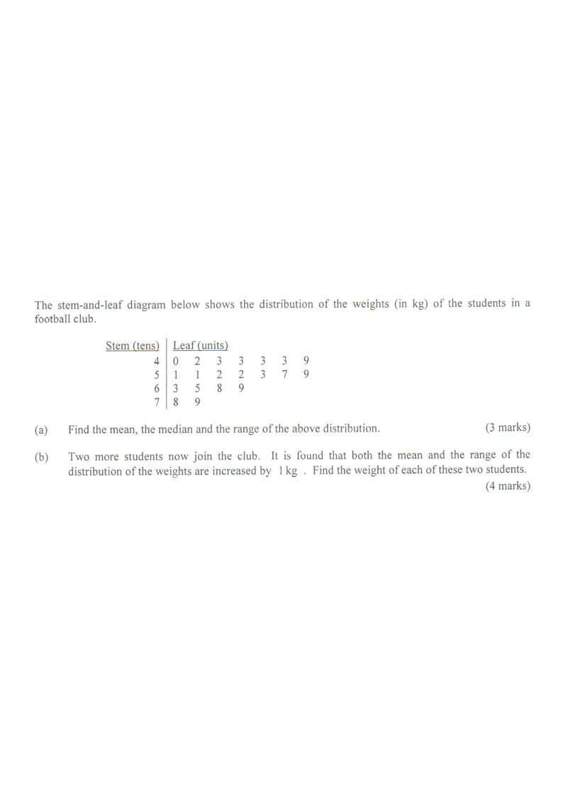

(a) Find the mean, the median and the range of the above distribution. [3 marks]
(b) Two more students now join the club. It is found that both the mean and the range of the distribution of the weights are increased by 1 kg. Find the weight of each of these two students. [4 marks]

Figure (original exam diagram)
Step-by-step solution
1
Read the data. Read each stem–leaf pair as a weight:
$40,42,43,43,43,43,49,\;51,51,52,52,53,57,59,\;63,65,68,69,\;78,79$.
There are $n = 20$ students.
Stem = tens digit, leaf = units digit. e.g. stem 6, leaf 9 → $69$ kg.
Mean of a Set of Data\(\bar{x}=\dfrac{\sum x}{n}\)The total \(1095 ext{ kg}\) shared among \(20\) students gives the mean \(55 ext{ kg}\).
3
(a) Median. With $n = 20$ (even), the median is the average of the $10$th and $11$th values.
The sorted data give $10$th $= 51$ and $11$th $= 52$, so
\[
\text{Median} = \frac{51+52}{2} = 51.5 \text{ kg}
\]
Count leaves in order: $40,42,43,43,43,43,49,51,51,\underbrace{52}_{10\text{th}},\underbrace{52}_{11\text{th}},\dots$
Median of an Even Number of Data\(\text{median}=\dfrac{x_{(n/2)}+x_{(n/2+1)}}{2}\)With \(n=20\) the median is the average of the \(10\)th value \(51\) and the \(11\)th value \(52\).
Range = max − min. (No need to rearrange, but it is already sorted.)
Range of a Set of Data\(\text{range}=\text{largest value}-\text{smallest value}\)The weights run from \(40\) to \(79\), so the range is \(39 ext{ kg}\).
5
(b) Set up the two unknowns.
Let the weights of the two new students be $a$ kg and $b$ kg, where $a \le b$.
Mean condition: the new mean is $55 + 1 = 56$ kg with $22$ students:
\[
\frac{1095 + a + b}{22} = 56 \;\Rightarrow\; a+b = 1232 - 1095 = 137
\]
New total is $22 \times 56$ kg; subtract the original total $1095$ kg.
6
(b) Range condition. The new range is $39 + 1 = 40$ kg.
Case 1: the smallest value becomes $a = 39$.
Case 2 (since $a \le b$, the maximum can only increase): the largest value becomes $b$.
Only the minimum can drop below $40$, or the maximum can rise above $79$. Test both possibilities.
7
Case 1: $a = 39$. Then from $a+b=137$, $b = 98$.
But the new range would be $98-39 = 59 \neq 40$ kg — impossible.
A single new low value cannot force a range of exactly 40 with such a large partner.
8
Case 2: $b = 40 \text{(extra?)}$ — instead take the maximum: the largest becomes $40$.
Wait carefully: the new range is $40$ kg, so the largest new value must be $40$ more than the smallest. The smallest is still $40$, thus $b = 80$.
\[
a = 137 - 80 = 57 \quad (\text{check: } 40 \le 57 \le 80 \checkmark)
\]
Range = max − 40 = 40 ⇒ max = 80. Then $a=137-80=57$ kg.
9
Check. New data set adds $57$ and $80$:
\[
\bar{x}=\frac{1095+57+80}{22}=\frac{1232}{22}=56 = 55+1\ \checkmark
\]
\[
\text{Range} = 80-40 = 40 = 39+1\ \checkmark
\]
Both the mean and range increased by exactly 1 kg.
(a) Mean $= 55$ kg, Median $= 51.5$ kg, Range $= 39$ kg. (b) The weights of the two students are $\mathbf{57}$ kg and $\mathbf{80}$ kg.
PRACTICESimilar question — try it yourself
Question. The stem-and-leaf diagram below shows the weights (in kg) of the students in a club. Stem (tens) | Leaf (units): \(1\,|\,2\ 4\ 5\ 6\ 6\ 8\ 9\) and \(2\,|\,0\ 2\ 8\). (a) Find the mean, the median and the range. [3 marks] (b) Two more students join the club. It is found that both the mean and the range of the weights are increased by \(1\text{ kg}\). Find the weight of each of these two students. [4 marks]
Show the worked solution
Step 1. The data are \(12,14,15,16,16,18,19,20,22,28\), so \(n=10\).
Step 2. Mean: total \(=180\text{ kg}\), so mean \(=\dfrac{180}{10}=18\text{ kg}\).
Step 3. Median: the \(5\)th and \(6\)th values are \(16\) and \(18\), so median \(=\dfrac{16+18}{2}=17\text{ kg}\).
Step 4. Range: \(28-12=16\text{ kg}\).
Step 5. (b) Let the new weights be \(a\le b\). New mean \(=19\text{ kg}\) with \(12\) students, so \(12\times 19=228\) and \(a+b=228-180=48\).
Step 6. New range \(=17\text{ kg}\); the smallest is still \(12\), so the largest must be \(29\), i.e. \(b=29\) and \(a=48-29=19\).
Step 7. Check: mean \(=\dfrac{180+19+29}{12}=\dfrac{228}{12}=19\) ✓ and range \(=29-12=17\) ✓.
Answer: (a) mean \(18\text{ kg}\), median \(17\text{ kg}\), range \(16\text{ kg}\); (b) \(19\text{ kg}\) and \(29\text{ kg}\)